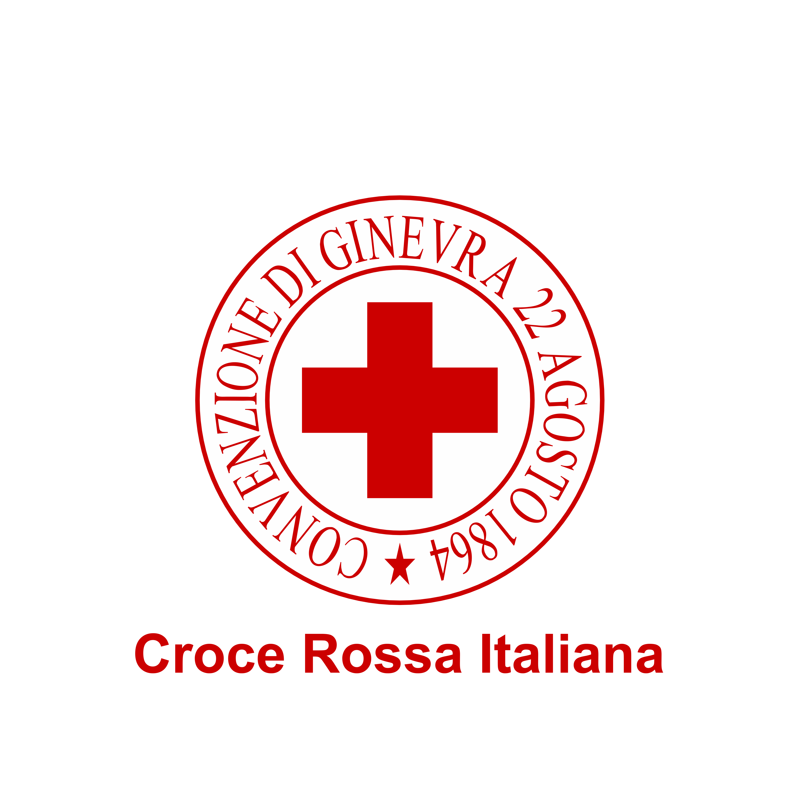

Croce Rossa Italiana
Comitato di Padova
Configura il test
Quante domande vuoi fare?
Le domande saranno selezionate casualmente dal database.
15
domande
30
domande
⏱
15:00
Domanda 1 di 15
0%
Domanda 1
Prossima domanda →
🎯
Ottimo lavoro!
0
Corrette
0
Totale
0
Errate
💾 Salvataggio risultato...
🔄 Rifai il test
📊 I miei quiz
🏠 Torna alla home
← Torna ai risultati
📊 I miei quiz
🏠 Torna alla home